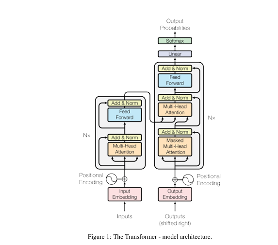
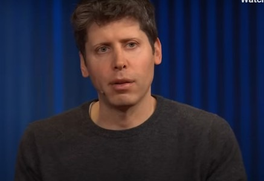

Inteligência Artificial Como Colega de Trabalho
Linha do tempo da Inteligência Artificial
Completando 70 anos em 2026, a IA tem trajetória marcada por avanços científicos, frustrações técnicas e sucessivas reformulações ao longo de décadas.
3: O Salto no Século XXI (2017 - Futuro)
O salto seguinte acontece já no século 21, impulsionado por três fatores combinados:
• Mais dados, graças à internet e à digitalização da vida;
• Mais poder computacional, especialmente com o uso di GPUs;
• Novos modelos matemáticos, inspirados de forma distante no funcionamento do cérebro humano.
Em 2017, o Google lançou o artigo Atenção é tudo o que você precisa, apresentando o Transformer, um tipo de rede neural que mudou a forma como as máquinas processam a linguagem. O modelo aprende o contexto das palavras ao ajustar dinamicamente os pesos de atenção, identificando relações semânticas mesmo entre termos distantes no texto. Essa característica deu origem ao Large Language Models (LLMs).

A partir da ideia dos grandes modelos de linguagem, a OpenAI, empresa responsável pelo ChatGPT, treina seus sistemas com volumes gigantescos de textos, incluindo livros ainda não publicados. Ao tentar prever a próxima palavra de uma sequência, o modelo passou a demonstrar habilidades inesperadas, como responder perguntas, manter diálogos coerentes e articular informações de diferentes contextos. Em 2022 a empresa lança então o ChatGPT, abrindo a fronteira para o uso de IA em diferentes contextos.
Com esse lançamento, e suas versões posteriores, a ética no uso dessa inteligência passa a ser uma preocupação. Viés algorítmico, opacidade dos modelos, uso indevido de dados e impactos no mercado de trabalho entram definitivamente na agenda pública e científica.

Agora, quando o olhar se volta para o futuro, o consenso entre especialistas é menos triunfalista do que costuma parecer. Há quem defenda que estamos nos aproximando de uma inteligência artificial generalista, capaz de executar uma ampla gama de tarefas e, em alguns aspectos, rivalizar com habilidades humanas. Ainda assim, não há clareza sobre como esse patamar seria efetivamente alcançado. Persistem desafios estruturais, como a redução dos custos de desenvolvimento, a necessidade de infraestruturas computacionais mais eficientes e a diminuição dos impactos ambientais associados ao treinamento de grandes modelos.
Mais do que dominar ferramentas, torna-se essencial formar profissionais que saibam escolher quais técnicas empregar e em que contextos, na busca por soluções para problemas complexos, com rigor técnico, senso crítico e responsabilidade social – valores que hoje orientam a formação do MBA em IA e Big Data da USP.